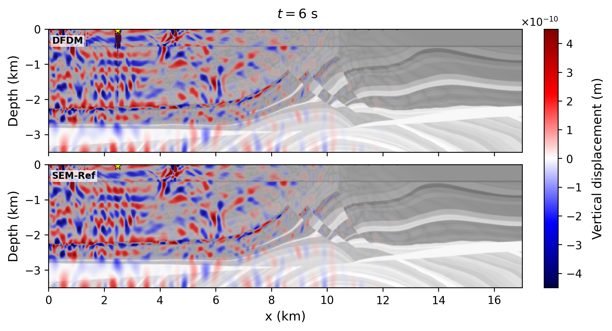
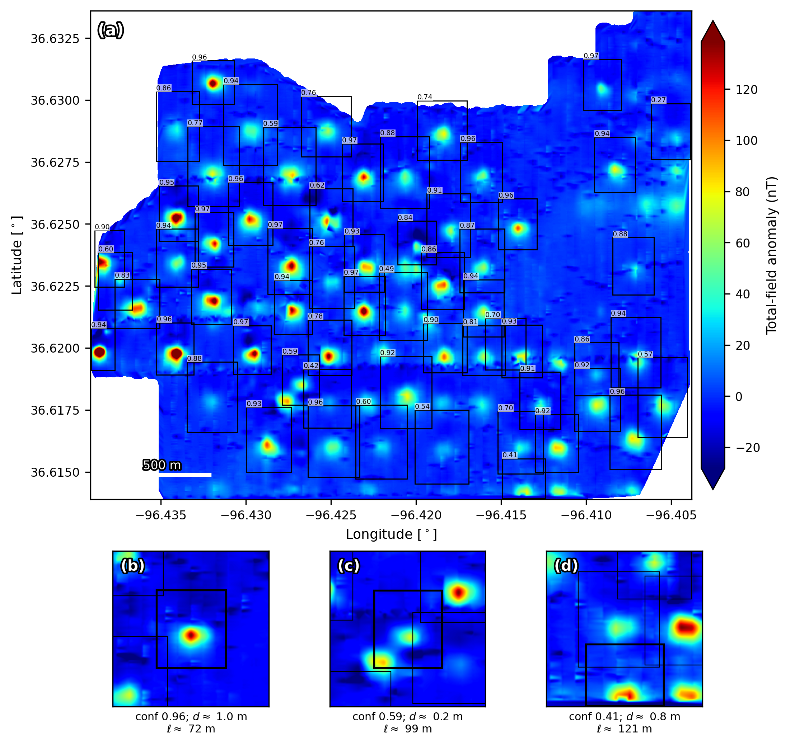
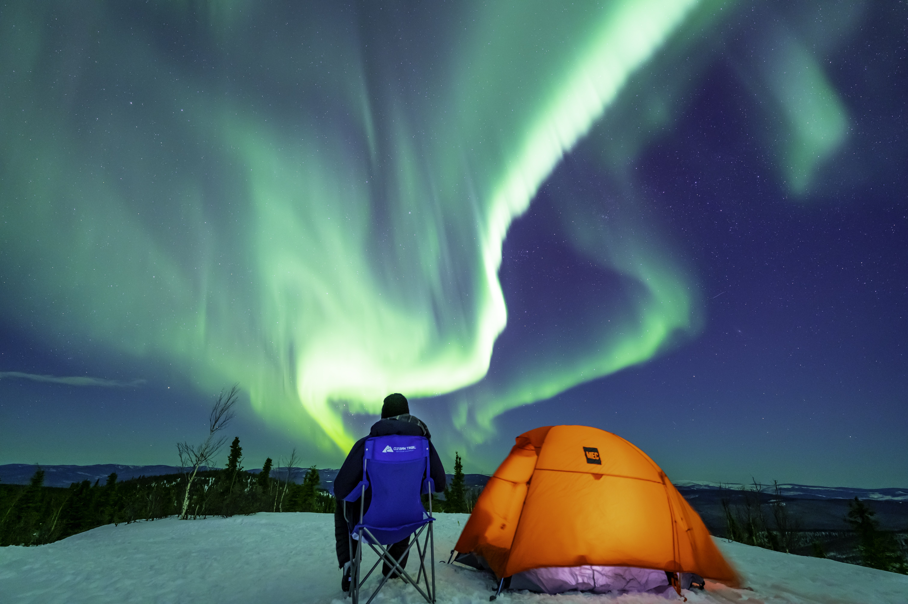

UC Berkeley · Numerical methods
DFDM wave modeling
An illustrative seismic wavefield snapshot in the synthetic Marmousi model.
Explore the projectComputational geophysicist
Assistant Project Scientist · UC Berkeley
I develop computational methods for wave physics and geophysical sensing, connecting numerical modeling, high-performance computing, and scientific machine learning.
Projects, methods, and selected results
Explore projects 02Experience, education, and technical background
Open academic CV · PDF 03Peer-reviewed work and direct paper links
Read publicationsA closer look

UC Berkeley · Numerical methods
An illustrative seismic wavefield snapshot in the synthetic Marmousi model.
Explore the project
LLNL · Machine learning
Detecting candidate magnetic anomalies in real drone survey data.
Explore the projectDOE · Annual Recurring University Training and Research
LOI submitted, Oct 2026
Full proposal in preparation
Principal Investigator · UC Berkeley
NSF · Structure and Physics of the Solid Earth
Submitted, Sep 2026
Principal Investigator · UC Berkeley
DOE · Genesis Mission: Transforming Science and Energy with AI
Proposal submitted; alternate, Jul 2026
Principal Investigator · UC Berkeley
DOE · Technology Commercialization Fund (TCF)
CLIMR Lab Call, FY25
Submitted, 2025
Concept paper encouraged
Principal Investigator · LLNL
Research
My work spans numerical wave propagation, planetary seismology, ground-motion analysis, and machine learning for geophysical data.
UC Berkeley · Current research
I develop and benchmark the Distributional Finite Difference Method (DFDM) for seismic wave propagation.
This illustrative snapshot shows the vertical-displacement wavefield at 6 seconds in the synthetic Marmousi model. Wave amplitudes are shown in color over the grayscale velocity structure. Near-source artifacts remain under review.
2026 SSA abstractLawrence Livermore National Laboratory
MagYOLO applies YOLO object detection to magnetic survey data.
On real drone magnetometry from Osage County, Oklahoma, detection boxes mark candidate magnetic anomalies and their confidence. These detections are not confirmed wells; the depth and length estimates shown in the lower panels remain unvalidated.
Earth & planetary science
Earth · Seismic wave propagation
Three-dimensional simulations of Alaska’s Nenana basin reveal how basin geometry, earthquake location, and frequency shape ground-motion amplification.
My work with Carl Tape compares multiple velocity models and observed seismic records to connect wave physics with local ground shaking.
Read the 2025 JGR paperPlanets · Numerical methods
I developed AstroSeis, a 3D boundary-element code for seismic wavefields in irregular bodies, including surface topography and solid–liquid interfaces.
Energy · Seismic monitoring
At Lawrence Livermore National Laboratory, I developed elastic-wave sensitivity-guided approaches to design adaptive seismic surveys for geological carbon storage.
Model elastic-wave sensitivity
Choose informative source–receiver layouts
Adapt to evolving CO₂ plume geometry
Demonstrated using the Kimberlina site in California.
Read the 2026 IJGGC paperDOE · Annual Recurring University Training and Research
LOI submitted, Oct 2026
Full proposal in preparation
Principal Investigator · UC Berkeley
NSF · Structure and Physics of the Solid Earth
Submitted, Sep 2026
Principal Investigator · UC Berkeley
DOE · Genesis Mission: Transforming Science and Energy with AI
Proposal submitted; alternate, Jul 2026
Principal Investigator · UC Berkeley
DOE · Technology Commercialization Fund (TCF)
CLIMR Lab Call, FY25
Submitted, 2025
Concept paper encouraged
Principal Investigator · LLNL
CV & background
Experience across university research and a U.S. national laboratory, with a focus on computational geophysics.
Open academic CV · PDFUpdated October 2026.
Research profile
My research spans numerical wave propagation, planetary seismology, sedimentary-basin response, and geophysical monitoring.
I earned my Ph.D. in Geophysics at the University of Houston and my B.S. in Geophysics at the University of Science and Technology of China.
Python · C++ · MATLAB · Fortran
DFDM · Boundary elements · SpecFEM
High-performance computing · Seismic data analysis
2026–present
Assistant Project Scientist
2023–2026
Postdoctoral Research Staff
2020–2023
Postdoctoral research, Geophysical Institute
2020
Ph.D. in Geophysics
2014
B.S. in Geophysics

Beyond the wavefield
A little of Alaska, through my lens.
Alaska photographySelected publications
Peer-reviewed work in computational seismology, planetary science, and geophysical monitoring.
Complete list on Google ScholarInternational Journal of Greenhouse Gas Control
Tian, Y., Yang, X., Huang, L., Gao, K., Iyer, J., Vasylkivska, V., & Gasperikova, E. (2026). Elastic-wave sensitivity-guided adaptive seismic survey design for cost-effective monitoring of geological carbon storage. International Journal of Greenhouse Gas Control, 153, 104655. https://doi.org/10.1016/j.ijggc.2026.104655
Journal of Geophysical Research: Solid Earth
Tian, Y., & Tape, C. (2025). Analysis of seismic wave amplification in sedimentary basins using 3D wavefield simulations: Nenana Basin, central Alaska. Journal of Geophysical Research: Solid Earth, 130, e2025JB031559. https://doi.org/10.1029/2025JB031559
Seismological Research Letters
Tian, Y., Herrick, R. R., West, M. E., & Kremic, T. (2023). Mitigating power and memory constraints on a Venusian seismometer. Seismological Research Letters, 94(1), 159–171. https://doi.org/10.1785/0220220085
Seismological Research Letters
Tian, Y., & Zheng, Y. (2020). AstroSeis: A 3D boundary element modeling code for seismic wavefields in irregular asteroids and bodies. Seismological Research Letters, 91(6), 3528–3538. https://doi.org/10.1785/0220200145
Planetary and Space Science
Tian, Y., & Zheng, Y. (2020). Rapid falling of an orbiting moon to its parent planet due to tidal-seismic resonance. Planetary and Space Science, 104796. https://doi.org/10.1016/j.pss.2019.104796
Contact
Computational geophysics, wave modeling, and scientific machine learning.